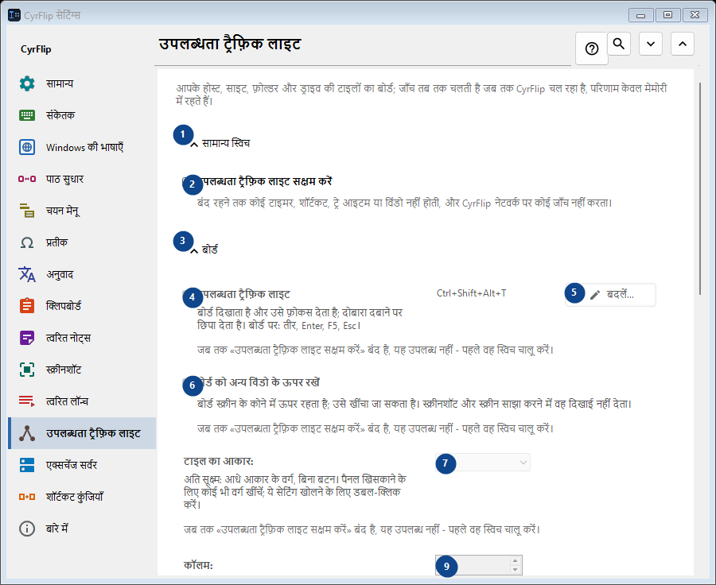
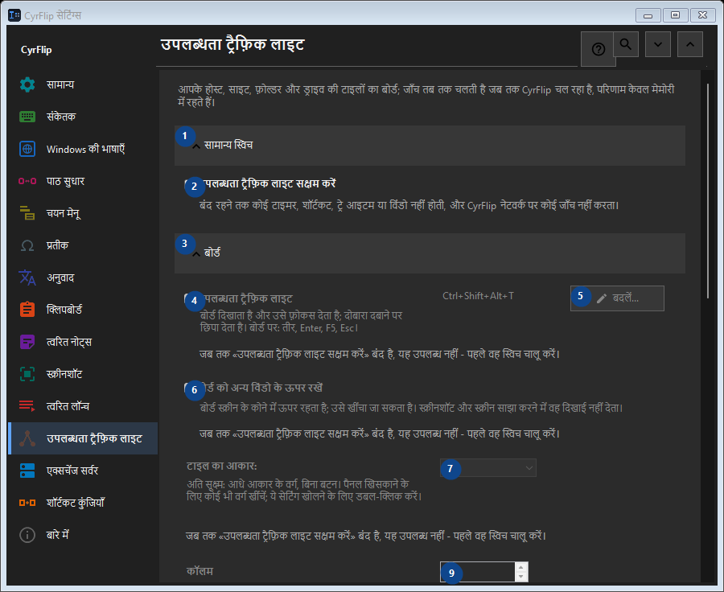

उपलब्धता ट्रैफ़िक लाइट
इसका उपयोग
आपके होस्ट, साइट, फ़ोल्डर और ड्राइव की टाइलों का बोर्ड; जाँच तब तक चलती है जब तक CyrFlip चल रहा है, परिणाम केवल मेमोरी में रहते हैं।


उपयोग का क्रम
सेटिंग तुरंत लागू होती हैं। कोई अनिवार्य क्रम नहीं है; नीचे दिए समूहों का उपयोग करें।
तत्व
1. सामान्य स्विच
बताई गई कार्रवाई के लिए इस आदेश का उपयोग करें। स्वीकार करने से पहले पुष्टि पढ़ें।
आपके शॉर्टकट2. उपलब्धता ट्रैफ़िक लाइट सक्षम करें
बंद रहने तक कोई टाइमर, शॉर्टकट, ट्रे आइटम या विंडो नहीं होती, और CyrFlip नेटवर्क पर कोई जाँच नहीं करता।
आपके शॉर्टकट3. बोर्ड
बताई गई कार्रवाई के लिए इस आदेश का उपयोग करें। स्वीकार करने से पहले पुष्टि पढ़ें।
आपके शॉर्टकट4. उपलब्धता ट्रैफ़िक लाइट
जब तक «उपलब्धता ट्रैफ़िक लाइट सक्षम करें» बंद है, यह उपलब्ध नहीं - पहले वह स्विच चालू करें। यह तत्व अभी उपलब्ध नहीं है। पहले सुविधा चालू करें या कोई प्रविष्टि चुनें।
आपके शॉर्टकट5. बदलें - उपलब्धता ट्रैफ़िक लाइट
जब तक «उपलब्धता ट्रैफ़िक लाइट सक्षम करें» बंद है, यह उपलब्ध नहीं - पहले वह स्विच चालू करें। यह तत्व अभी उपलब्ध नहीं है। पहले सुविधा चालू करें या कोई प्रविष्टि चुनें।
आपके शॉर्टकट6. बोर्ड को अन्य विंडो के ऊपर रखें
जब तक «उपलब्धता ट्रैफ़िक लाइट सक्षम करें» बंद है, यह उपलब्ध नहीं - पहले वह स्विच चालू करें। यह तत्व अभी उपलब्ध नहीं है। पहले सुविधा चालू करें या कोई प्रविष्टि चुनें।
आपके शॉर्टकट7. टाइल का आकार
जब तक «उपलब्धता ट्रैफ़िक लाइट सक्षम करें» बंद है, यह उपलब्ध नहीं - पहले वह स्विच चालू करें। यह तत्व अभी उपलब्ध नहीं है। पहले सुविधा चालू करें या कोई प्रविष्टि चुनें।
आपके शॉर्टकट8. कॉलम
जब तक «उपलब्धता ट्रैफ़िक लाइट सक्षम करें» बंद है, यह उपलब्ध नहीं - पहले वह स्विच चालू करें। यह तत्व अभी उपलब्ध नहीं है। पहले सुविधा चालू करें या कोई प्रविष्टि चुनें।
आपके शॉर्टकट9. जब तक «उपलब्धता ट्रैफ़िक लाइट सक्षम करें» बंद है, यह उपलब्ध नहीं - पहले वह स्विच चालू करें।
पास के लेबल के अनुसार मान चुनें या दर्ज करें। आगे बढ़ने से पहले जाँचें। यह तत्व अभी उपलब्ध नहीं है। पहले सुविधा चालू करें या कोई प्रविष्टि चुनें।
आपके शॉर्टकट10. बोर्ड विंडो की पारदर्शिता
जब तक «उपलब्धता ट्रैफ़िक लाइट सक्षम करें» बंद है, यह उपलब्ध नहीं - पहले वह स्विच चालू करें। यह तत्व अभी उपलब्ध नहीं है। पहले सुविधा चालू करें या कोई प्रविष्टि चुनें।
आपके शॉर्टकट11. बोर्ड दिखाएँ
जब तक «उपलब्धता ट्रैफ़िक लाइट सक्षम करें» बंद है, यह उपलब्ध नहीं - पहले वह स्विच चालू करें। यह तत्व अभी उपलब्ध नहीं है। पहले सुविधा चालू करें या कोई प्रविष्टि चुनें।
आपके शॉर्टकट12. लक्ष्य
बताई गई कार्रवाई के लिए इस आदेश का उपयोग करें। स्वीकार करने से पहले पुष्टि पढ़ें।
आपके शॉर्टकट13. पता
जब तक «उपलब्धता ट्रैफ़िक लाइट सक्षम करें» बंद है, यह उपलब्ध नहीं - पहले वह स्विच चालू करें। यह तत्व अभी उपलब्ध नहीं है। पहले सुविधा चालू करें या कोई प्रविष्टि चुनें।
आपके शॉर्टकट14. जोड़ें
जब तक «उपलब्धता ट्रैफ़िक लाइट सक्षम करें» बंद है, यह उपलब्ध नहीं - पहले वह स्विच चालू करें। यह तत्व अभी उपलब्ध नहीं है। पहले सुविधा चालू करें या कोई प्रविष्टि चुनें।
आपके शॉर्टकट15. विवरण...
जब तक «उपलब्धता ट्रैफ़िक लाइट सक्षम करें» बंद है, यह उपलब्ध नहीं - पहले वह स्विच चालू करें। यह तत्व अभी उपलब्ध नहीं है। पहले सुविधा चालू करें या कोई प्रविष्टि चुनें।
आपके शॉर्टकट16. अभी सब कुछ जाँचें
जब तक «उपलब्धता ट्रैफ़िक लाइट सक्षम करें» बंद है, यह उपलब्ध नहीं - पहले वह स्विच चालू करें। यह तत्व अभी उपलब्ध नहीं है। पहले सुविधा चालू करें या कोई प्रविष्टि चुनें।
आपके शॉर्टकट17. परिवर्तन इतिहास
बताई गई कार्रवाई के लिए इस आदेश का उपयोग करें। स्वीकार करने से पहले पुष्टि पढ़ें।
आपके शॉर्टकट18. इतिहास फ़ाइल खोलें
जब तक «उपलब्धता ट्रैफ़िक लाइट सक्षम करें» बंद है, यह उपलब्ध नहीं - पहले वह स्विच चालू करें। यह तत्व अभी उपलब्ध नहीं है। पहले सुविधा चालू करें या कोई प्रविष्टि चुनें।
आपके शॉर्टकट19. फ़ोल्डर में दिखाएँ
जब तक «उपलब्धता ट्रैफ़िक लाइट सक्षम करें» बंद है, यह उपलब्ध नहीं - पहले वह स्विच चालू करें। यह तत्व अभी उपलब्ध नहीं है। पहले सुविधा चालू करें या कोई प्रविष्टि चुनें।
आपके शॉर्टकट20. इतिहास साफ़ करें...
जब तक «उपलब्धता ट्रैफ़िक लाइट सक्षम करें» बंद है, यह उपलब्ध नहीं - पहले वह स्विच चालू करें। यह तत्व अभी उपलब्ध नहीं है। पहले सुविधा चालू करें या कोई प्रविष्टि चुनें।
आपके शॉर्टकट